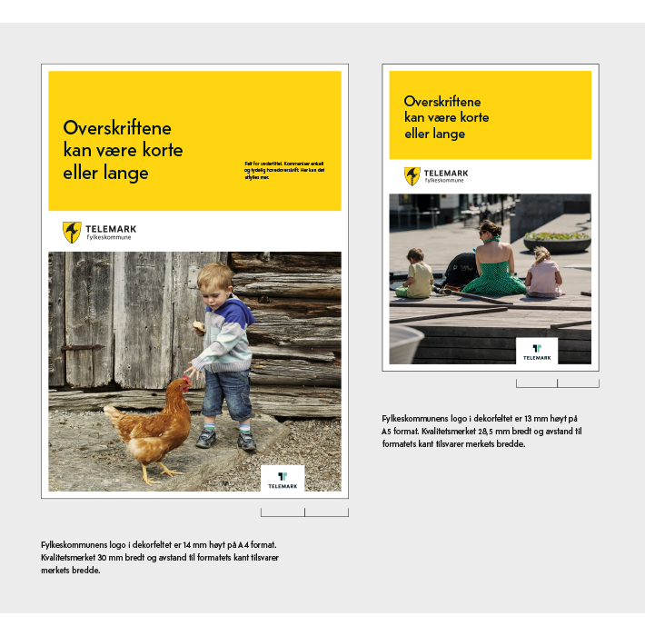
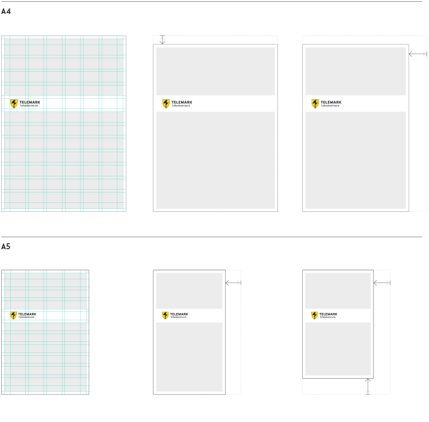
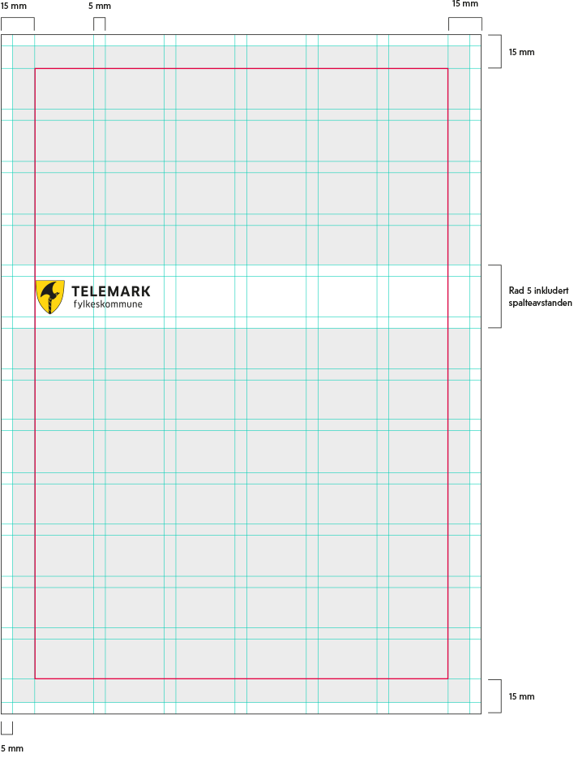
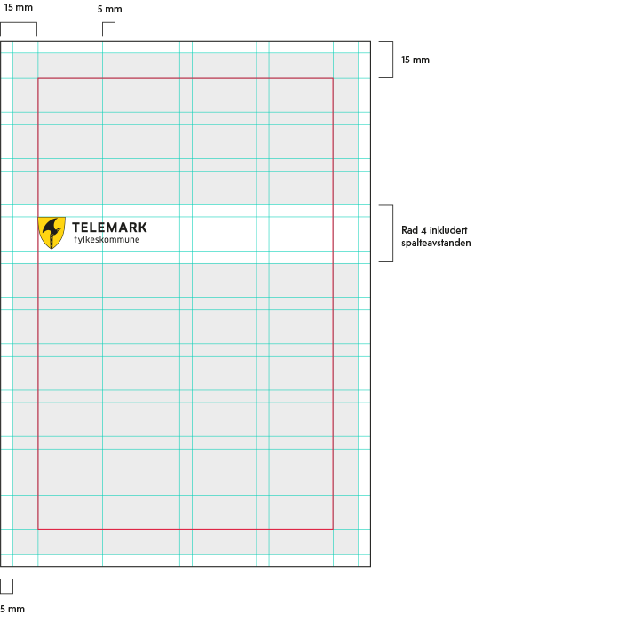

Innledning
Telemark fylkeskommunes layout bygger på merkevaren Telemarks A4 grid. Margene og rutenettet fra denne ligger til grunn for Telemark fylkeskommunes bærende visuelle uttrykk i layout.
Dekorelement
Forsiden deles opp i to hovedflater: En profilfarget flate med hovedbudskapet, og en flate som er forbeholdt foto. Fylkeskommunens logo står i et fast, hvitt dekorelement i skjæringspunktet mellom disse to kontrastene. Dette er et gjennomgående grafisk grep for Telemark fylkeskommune, et viktig dekorelement. Denne todelingen er også med på å understreke “kontraster”, som er hovedidéen med merkevaren Telemark (T’en).
T’en som kvalitetsmerke
Når T’en brukes har den en fast plassering nederst til høyre i forsidemalen. Merket er 30 mm bredt til standard A4 format. Avstand til formatets kant tilsvarer merkets bredde.
På A5 formatet er kvalitetsmerket 28,5 mm bredt. Den kan ikke gjøres mindre, dette ville ført til at Merkevaren Telemarks logo blir lavere enn 10 mm.
Andre formater
Trekke fra eller legge til
For å sikre et konsekvent uttrykk anbefales bruk av A4. Det er fullt mulig å produsere grafisk materiell i andre formater, men det krever et våkent øye.
A4 er utgangspunktet for relativt store formater.
A5 er utgangspunktet for små formater. På denne måten begrenser vi til to forskjellige logostørrelser på ordinære trykksaker. Store plakatformater skaleres proporsjonalt etter A4-griden og tilpasses deretter.
Griden er kun en rettesnor på hvordan forhold skal være, man må i hvert enkelt tilfelle bruke skjønn:
- Endre formatet i høyde eller bredde.
- Pass på at den hvite margen er 5 mm rundt hele formatet.
- Definer margene i det nye dokumentet slik at satsspeilet blir gjeldende for hele dokumentet
- Innenfor satsspeilet kan layout settes opp etter ønsket antall teksspalter.
- 5 mm avstand mellom tekstspalter.
- Bruk hjelpelinjer for å sikre ryddig design.
Det anbefales at grafisk materiell produsert av virksomhetsområder, som videregående skoler og tannklinikker, forholder seg til standard format.
Standard format
A4 grid
- Gjennomgående 5 mm hvit yttermarg på forside og bakside.
- Satsspeilet (markert rosa) har marg på 15 mm. Tekst og objekter skal være plassert innenfor dette området. Unntak: paginering og T’en.
- Grid innenfor satsspeilet er 6 kolonner og 12 rader. 5 mm spalteavstand.
- På forsider plasseres logo som hovedregel i dekorbånd som fyller rad 5 inkludert spalteavstanden.
- Logohøyde 15 mm.
A5 grid
- Gjennomgående 5 mm hvit yttermarg på forside og bakside.
- Satsspeilet (markert rosa) har marg på 15 mm. Tekst og objekter skal være plassert innenfor dette området. Unntak: paginering og T’en.
- Grid innenfor satsspeilet er 4 kolonner og 10 rader. 5 mm spalteavstand.
- På forsider plasseres logo som hovedregel i dekorbånd som fyller rad 4 inkludert spalteavstanden.
- Logohøyde 13 mm.
 